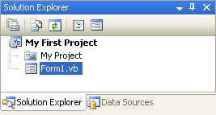
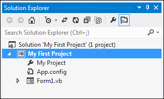
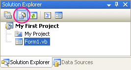
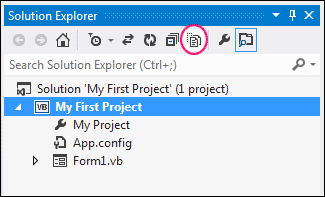
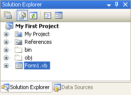
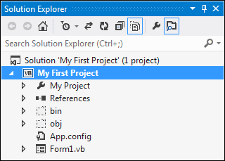
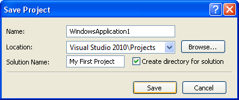

How to Save your VB .NET Projects
If you have a look in the top right of the Design Environment, you'll see the Solution Explorer. (If you can't see it, click View > Solution Explorer in version 2008 and View > Other Windows > Solution Explorer in version 2010.)

The Solution Explorer shows you all the files you have in your project (Notice that the name of your project is at the top of the tree - "My First Project"). The Solution Explorer in version 2012 is slightly different. It looks like this:

At first glance, it looks as though there are not many files in the project. But click the Show All Files icon, circled below:


When you click Show All Files, the Solution Explorer will look something like this:


When you save your project, you are saving all these files.
To save your work, click File > Save All and you'll see the following
dialogue box (you won't see a Save Project dialogue box in version 2012 - it
just saves your files):

The files are usually saved in the My Document folder in XP (Document folder in Vista and Windows 7/8), under Visual Studio. If you want to save your projects elsewhere, click the Browse button.
To actually save your work as you go along, just click File > Save All from
the menu bar. Or press Ctrl + Shift + S on your keyboard. Or click the icon
in the Toolbar (the stack of floppy disks). If you save often then you won't
lose any of your work if anything goes wrong with your computer.
In the next section, we'll get down and do a bit of actual programming. It's a gentle introduction, so nothing to get too worried about!